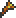

Underground Jungle
- See also: Jungle and Guide:Surviving in the Jungle.
The Underground Jungle is one of the more difficult areas in the world of Terraria. It is a dense network of small caverns, populated with thorns, water, and some of the more difficult enemies. You can safely but slowly make your way through if you have the Vilethorn, since you can wall yourself in at the first sign of Hornets and the kill them through the walls.
Shrines are common in this environment, often containing chests with rare items or weapons that can't be found anywhere else. Materials such as Stingers, Jungle Spores, and Vines (for use in crafting rare items) can also be gathered here in abundance. This biome will most likely end up taking you to The Underworld without much additional digging.
| Underground Jungle | ||
|---|---|---|
| Enemies | Unique treasures | Unique drops |
| From Shrines: |  Stinger (from the Hornet) From vegetation: | |
Hunting the Jungle
The Underground Jungle can be found directly under the Surface Jungle biome. Underground Jungle monsters and loot begin to appear in the middle of the Underground layer, at these depths:
| Map Size | Min Start Depth | Average Start Depth | Max Start Depth |
|---|---|---|---|
| Small | 60 ft | 240 ft | 420 ft |
| Medium | 90 ft | 360 ft | 630 ft |
| Large | 120 ft | 480 ft | 840 ft |
History
- 1.0.6:
- More Gems spawn in the Underground Jungle.
- Thorny Bushes growing from Jungle Grass are now destroyed on contact with the player.
- Underground Jungle now has Mud Background to avoid spawning Underground/Cavern layer mobs.
- 1.0.5: Unique music track added.
- 1.0.4:
- Jungle plants now grow underwater.
- Now found directly under the Surface Jungle biome.
- Pre-Release: Introduced.
| Environments |
|---|
| Forests Desert Ocean Jungle The Corruption The Hallow Underground Cavern Underground Jungle Underground Corruption Underground Hallow Dungeon Meteorite Floating Islands The Underworld |